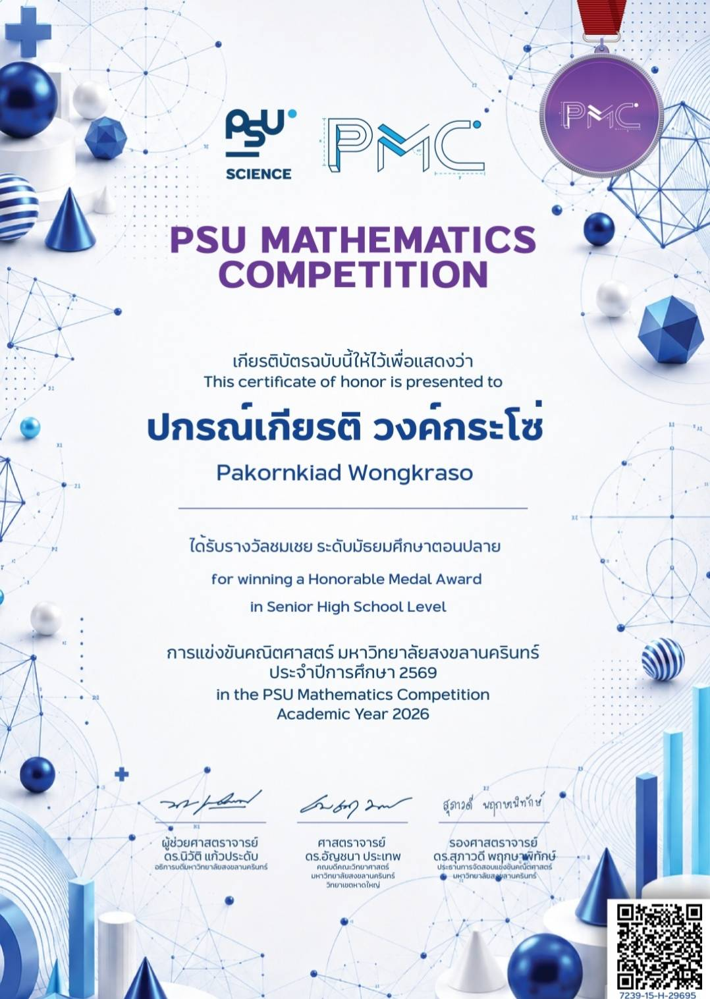

Portfolio
รางวัลชมเชย โครงการสอบแข่งขันคณิตศาสตร์ มหาวิทยาลัยสงขลานครินทร์ ประจำปี 2569
รางวัลจากการทดสอบทักษะการคิดวิเคราะห์และแก้โจทย์คณิตศาสตร์ระดับสูง ในการแข่งขันระดับภูมิภาค จัดโดยมหาวิทยาลัยสงขลานครินทร์ เป็นกิจกรรมที่ช่วยฝึกฝนกระบวนการคิดเชิงตรรกะอย่างเป็นระบบ และพัฒนาทักษะการคำนวณซึ่งเป็นรากฐานสำคัญของสายงานวิศวกรรมศาสตร์

รางวัลชนะเลิศ การแข่งขันอัจฉริยภาพทางคณิตศาสตร์
รางวัลอันดับ 1 จากการแข่งขันวัดอัจฉริยภาพและทักษะการแก้ปัญหาทางคณิตศาสตร์ แสดงถึงความเป็นเลิศในการคิดวิเคราะห์เชิงตรรกะขั้นสูง ความเข้าใจในทฤษฎีอย่างถ่องแท้ และความสามารถในการประยุกต์ใช้คณิตศาสตร์เพื่อแก้โจทย์ปัญหาซับซ้อน ซึ่งเป็นทักษะหัวใจสำคัญของวิศวกร

รางวัลรองชนะเลิสอันดับ 1 การแข่งขันตอบปัญหาม.6
รางวัลรองชนะเลิศอันดับ 1 จากการแข่งขันตอบปัญหาทางวิทยาศาสตร์และคณิตศาสตร์ระดับ ม.6 เนื่องในสัปดาห์วันวิทยาศาสตร์ สะท้อนถึงความรู้ความเข้าใจในหลักการทางวิทยาศาสตร์ กระบวนการคิดวิเคราะห์เชิงตรรกะ และการนำทฤษฎีมาประยุกต์ใช้ในการแก้ปัญหา ซึ่งเป็นพื้นฐานสำคัญของสายงานวิศวกรรมศาสตร์